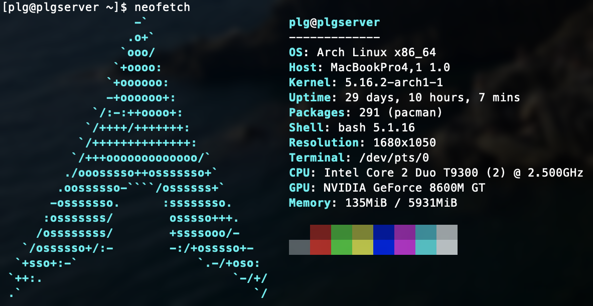

Voilà les étapes pour l’installation d’Arch sur un ancien mac.
Créer une clé USB bootable
diskutil list
diskutul unmountDisk /dev/disk2
dd if=~/Download/image.iso of=/dev/disk2 bs=8192
diskutil eject /dev/disk2Lancer l’installation
Brancher la clé, allumer l’ordinateur en maintenant la touche
option (alt) enfoncée. Choisir
EFI BOOT.
On arrive dans archiso, l’utilitaire d’installation.
Tout d’abord, on met le clavier en azerty :
loadkeys frEnsuite, vérifions qu’on est en mode EFI :
efivar -lSi quelque chose s’affiche, c’est que les fichiers EFI sont bien là. C’est bon.
Il faut à présent partitionner le disque. Le plus simple est d’avoir un boot (EFI) et un root. J’ai décidé d’ajouter un swap. Cette dernière partition vient en renfort de la mémoire, et aide en cas de veille prolongée (ce qui peut arriver sur un serveur).
Mon disque est /dev/sda. On va le partitionner ainsi
:
parted /dev/sdaJe dispose déjà d’un boot EFI et n’y touche pas.
Structure finale :
. /dev/sda
|_ sda1 boot
|_ sda2 root
|_ sda3 swapIl faut ensuite formater les différents membres :
mkfs.vfat -F32 /dev/sda1
mkfs.ext4 /dev/sda2
mkswap /dev/sda3
swapon /dev/sda3Ensuite, monter les disques :
mount /dev/sda2 /mnt
mkdir -p /mnt/boot && mount /dev/sda1 /mnt/bootIl faut à présent installer des paquets de base. Pour cela, vérifions qu’il y a internet (avec câble ethernet) :
ping gnu.orgPuis
pacstrap /mnt base base-devel linux linux-firmware vim networkmanager dhcpcdMaintenant, générer un fichier fstab :
genfstab -Up /mnt > /mnt/etc/fstab
vim /mnt/etc/fstabIl faut que les lignes se finissent ainsi :
De plus pour le root (ext4), on peut écrire
rw,relatime,data=ordered,discard
On peut passer à l’étape suivante :
arch-chroot /mnt /bin/bashIl faut générer les langues souhaitées :
vim /etc/locale.gen(décommenter les lignes correspondantes) puis
locale-genEnsuite, expliquer au système comment se comporter :
echo LANG=en_US.UTF-8 > /etc/locale.conf
echo KEYMAP=fr > /etc/vconsole.conf
echo nom_de_lordinateur > /etc/hostnameLa première ligne met en place la langue utilisée, la seconde le clavier, et la dernière donne un nom à la machinne.
Il faut ensuite gérer l’heure et la data :
ln -s /usr/share/zoneinfo/Europe/Paris /etc/localtime && hwclock --systohc --utcAjouter des métriques :
echo "coretemp\napplesmc" >> /etc/modulesMettre en place internet pour le redémarrage :
systemctl enable NetWorkManager && systemctl enable dhcpcdmettre un mot de passe admin :
passwdFinalement, le bootloader. Partie cruciale (sans elle, il faudra redémarrer l’installation à zéro)
pacman -S dosfstools
bootctl --path=/boot install
echo "default arch" > /boot/loader/loader.confEt pour finir :
vim /boot/loader/entries/arch.conf pour écrire :title Arch Linux
linux /vmlinuz-linux
initrd /initramfs-linux.img
options root=/dev/sda2 rw elevator=deadline quiet splash
resume=/dev/sda3 nmi_watchdog=0On peut redémarrer ! Il faut simplement partir proprement :
exit
umount -R /mnt
rebootPenser à enlever la clé usb, et se connecter avec le compte root créé.
Résultat
Depuis, le site tourne sur cette machine.